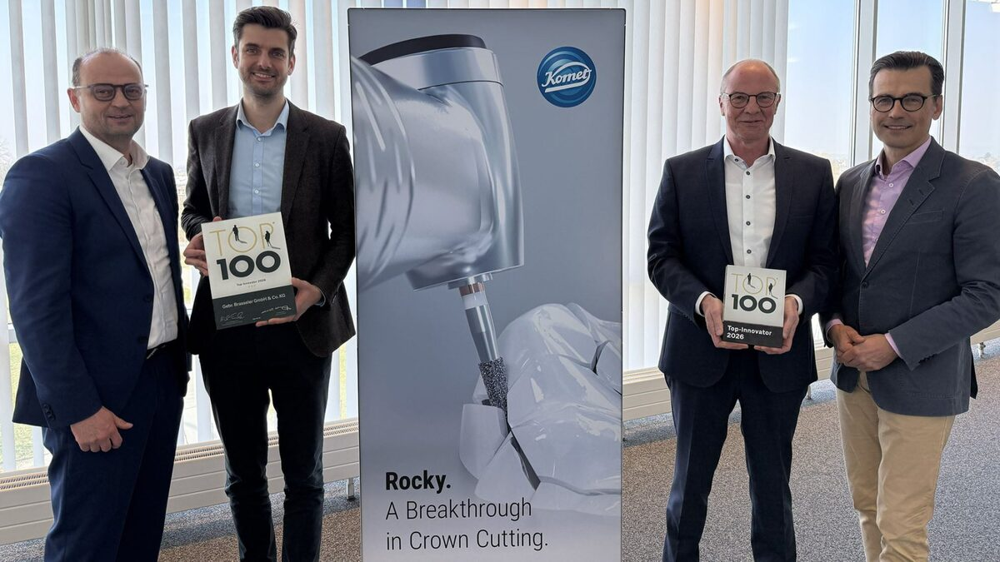

Brasseler erhält zum dritten Mal das TOP 100-Innovations-Siegel
Veröffentlicht am 13.03.2026
Lemgo, 13.03.2026
Das MedTech-Unternehmen Brasseler gehört auch 2026 erneut zu den innovativsten mittelständischen Unternehmen Deutschlands. Nach Auszeichnungen in den Jahren 2022 und 2023 erhält das Lemgoer Familienunternehmen zum dritten Mal das renommierte TOP 100-Innovationssiegel.
Brasseler überzeugte die Jury insbesondere durch ein strukturell verankertes Innovationsmanagement, das nicht als isolierte Funktion verstanden wird, sondern als integraler Bestandteil der gesamten Unternehmensorganisation. Die Experten würdigten in ihrer Begutachtung vor allem die Professionalität der Innovationsprozesse sowie die konsequente Weiterentwicklung von Strukturen und Zusammenarbeit.
Der bundesweite Innovationswettbewerb TOP 100 basiert auf einem wissenschaftlichen Auswahlverfahren unter der Leitung des Innovationsforschers Prof. Dr. Nikolaus Franke.
Bewertet wird die Innovationskraft mittelständischer Unternehmen anhand von mehr als 100 Kriterien in fünf Kategorien, darunter Innovationsmanagement, Innovationsprozesse und Innovationserfolg.
Innovationskraft mit System
Konkret zeigt sich dieser Ansatz unter anderem in der systematischen Ausrichtung von Innovationen entlang vollständiger Behandlungspfade statt einzelner Produkte. Hinzu kommt die enge Einbindung von Anwendern, Universitäten und externen Experten sowie die frühe Zusammenarbeit mit Kunden in Entwicklungsprozessen.
Im Bereich Komet Dental entstehen so Lösungen, die konkrete Herausforderungen aus dem Praxisalltag adressieren. Besonders hervorzuheben ist das innovative Instrument „Rocky“, das speziell für die Entfernung besonders harter vollkeramischer Kronen aus Zirkonoxid oder Lithiumdisilikat entwickelt wurde. Diese Materialien stellen hohe Anforderungen an
Leistungsfähigkeit und Präzision der eingesetzten Instrumente. Rocky kombiniert hohe Schneidleistung mit Langlebigkeit und ermöglicht dadurch effizientere, maximal schonende Behandlungsabläufe.
Im Geschäftsbereich Komet Medical arbeitet Brasseler ebenfalls eng mit Partnern aus der Medizintechnik zusammen und bringt seine technologische Expertise frühzeitig in Entwicklungsprojekte ein.

„Die erneute Auszeichnung bestätigt, dass Innovation bei Brasseler langfristig gedacht und systematisch umgesetzt wird“, sagt Stephan Köhler, Sprecher der Geschäftsführung. „Sie ist das Ergebnis unserer strategischen Ausrichtung, der Kompetenz unserer Mitarbeiter und unseres direkten Drahts zum Experten und Kunden.“
Die feierliche Preisverleihung findet am 26. Juni 2026 im Rahmen des Deutschen Mittelstands-Summit im Heidelberg Congress Center statt. Dort wird TOP-100-Mentor Christian Wulff, Bundespräsident a. D., den ausgezeichneten Unternehmen persönlich gratulieren.
Seit 1993 werden mittelständische Unternehmen, die durch besondere Innovationskraft und nachhaltige Innovationserfolge überzeugen, mit dem TOP 100-Preis ausgezeichnet. Veranstalter des Wettbewerbs ist die compamedia GmbH in Zusammenarbeit mit Projektpartnern wie der Fraunhofer-Gesellschaft und dem Bundesverband mittelständische Wirtschaft (BVMW).

v.l. Carsten Cieslik (Director Komet Dental), Michael Küllmer (Head of Innovation Management), Marcus Haynert (Head Product Management & Development) und Stephan Köhler (Sprecher der Geschäftsführung) neben einer Abbildung der Innovation „Rocky“

v.l. Carsten Cieslik (Director Komet Dental), Marcus Haynert (Head Product Management & Development), Michael Küllmer (Head of Innovation Management) und Stephan Köhler (Sprecher der Geschäftsführung) neben einer Abbildung der Innovation „Rocky“

Pressekontakt
Melanie Köhler
Unternehmenskommunikation
Telefon +49 (0) 160 3447748
presse@brasseler.de